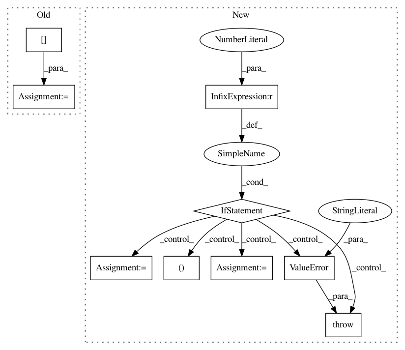

59266e34e076ed25852bccf5ce13025b5408406f,stellargraph/layer/gcn.py,GCN,__call__,#GCN#Any#,262
Before Change
Output tensor
H = x[0]
extra_in = x[1:]
for layer in self._layers:
if isinstance(layer, GraphConvolution):
// It is a GCN layer add the extra inputs
After Change
// Currently we require the batch dimension to be one for full-batch methods
batch_dim, n_nodes, _ = K.int_shape(x_in)
if batch_dim != 1:
raise ValueError(
"Currently full-batch methods only support a batch dimension of one"
)
// Convert input indices & values to a sparse matrix
if self.use_sparse:
A_indices, A_values = As
Ainput = TFSparseConversion(shape=(n_nodes, n_nodes))([A_indices, A_values])
// Otherwise, create dense matrix from input tensor
else:
Ainput = Lambda(lambda A: K.squeeze(A, 0))(As[0])
// Remove singleton batch dimension
h_layer = x_in
for layer in self._layers:
In pattern: SUPERPATTERN
Frequency: 3
Non-data size: 9
Instances
Project Name: stellargraph/stellargraph
Commit Name: 59266e34e076ed25852bccf5ce13025b5408406f
Time: 2019-05-28
Author: andrew.docherty@data61.csiro.au
File Name: stellargraph/layer/gcn.py
Class Name: GCN
Method Name: __call__
Project Name: nilearn/nilearn
Commit Name: fe9133e946a6118178e5b781dffc7c269b66b9b6
Time: 2014-05-16
Author: gael.varoquaux@normalesup.org
File Name: nilearn/decomposition/multi_pca.py
Class Name: MultiPCA
Method Name: fit
Project Name: neurodsp-tools/neurodsp
Commit Name: 08be819a5fd8edd74a59dcc363c9e7694ca009d2
Time: 2019-09-01
Author: tdonoghue@ucsd.edu
File Name: neurodsp/utils/outliers.py
Class Name:
Method Name: remove_nans